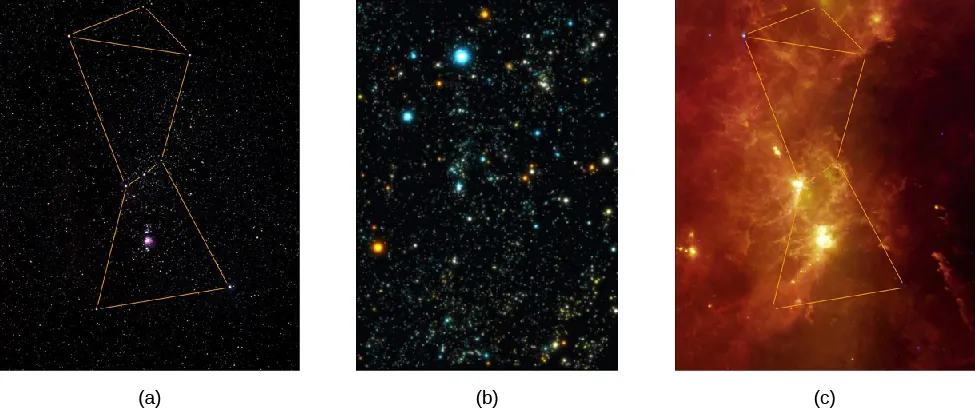

aperture
ASTR 101 · Lecture 06
Telescopes, Detectors, and Observing Limits
Evidence, model, and quantitative reasoning
Learning Goals
- Explain why this lecture's central phenomenon matters: a telescope is not simply a magnifier.
- Use the key model idea that resolution is limited by diffraction and often by atmosphere.
- Apply the lecture's quantitative tool with units, assumptions, and a physical interpretation.
- Correct the misconception: More magnification is not always better; excessive magnification spreads limited light and does not overcome poor resolution.
Reading anchor: OpenStax Astronomy 2e, Chapter 6.1-6.5 on telescopes, detectors, resolution, and multiwavelength observing.
Why This Question Matters
Galileo's telescope changed astronomy by extending human sight, but modern telescopes are not just bigger eyes. They are calibrated instruments designed around wavelength, detector physics, and the question being asked.
Opening Phenomenon
A telescope is not simply a magnifier. It is a measuring system whose aperture, optics, detector, atmosphere, and calibration determine what can be learned.
First question: what is directly observed, and what part is an explanation built from a model?
Vocabulary for Reasoning
collecting area
resolution
seeing
field of view
detector
signal-to-noise
Use these terms to describe evidence and relationships, not as isolated vocabulary.
Evidence We Need to Explain
- Larger apertures collect more photons and can reveal fainter targets.
- Atmospheric turbulence blurs images even when optics are excellent.
- Detectors count photons with noise, bias, and calibration limits.
Physical or Geometric Model
- Resolution is limited by diffraction and often by atmosphere.
- Signal-to-noise improves with more photons but not all noise averages away equally.
- The best instrument depends on the scientific question, wavelength, and target brightness.
Quantitative Tool
\[ \theta \approx 1.22\frac{\lambda}{D} \qquad \text{and} \qquad A = \pi(D/2)^2 \]
Compare collecting area and diffraction limit separately; they answer different observing questions.
Worked Example
- A 1 m telescope has 100 times the collecting area of a 10 cm telescope.
- At the same wavelength, its diffraction limit is 10 times smaller.
- In practice, seeing may dominate for ground-based optical observations.
The answer should distinguish light-gathering gain from resolution gain.
Visual Reasoning
Follow the chain from incoming light to optics, detector, calibration, and final claim about the object.
- Where does aperture enter the measurement?
- Where does the detector sample the image?
- Which limitation is optical and which is atmospheric or instrumental?

Common Misconception
More magnification is not always better; excessive magnification spreads limited light and does not overcome poor resolution.
Correct it by comparing magnification, resolution, and photon collection.
Active Learning Segment
Students choose an observing setup for a faint galaxy, a bright planet, and a wide star field, defending different instrument choices.
Write a prediction first, compare reasoning with a neighbor, then revise your answer in one sentence.
Lab or Observing Connection
Lab 05 connects telescope setup, field of view, image scale, and observing constraints. Your setup should connect aperture, field of view, detector sampling, and observing limits.
Synthesis
Instrumentation defines the evidence. A measurement is only as meaningful as the observing system and calibration behind it.
- How do aperture, resolution, and detector noise shape evidence?
- Why is magnification not the central performance measure?
- Which observing setup fits the target?
References and Visual Credits
- OpenStax, Astronomy 2e: OpenStax Astronomy 2e, Chapter 6.1-6.5 on telescopes, detectors, resolution, and multiwavelength observing.
- Local reference copy:
references/openstax-astronomy-2e.pdf. - Visual: The same sky field becomes different evidence when detector wavelength changes. Credit: OpenStax Astronomy 2e, Fig. 6.2, CC BY-NC-SA 4.0; source credits include Howard McCallon/NASA/IRAS and Michael F. Corcoran.